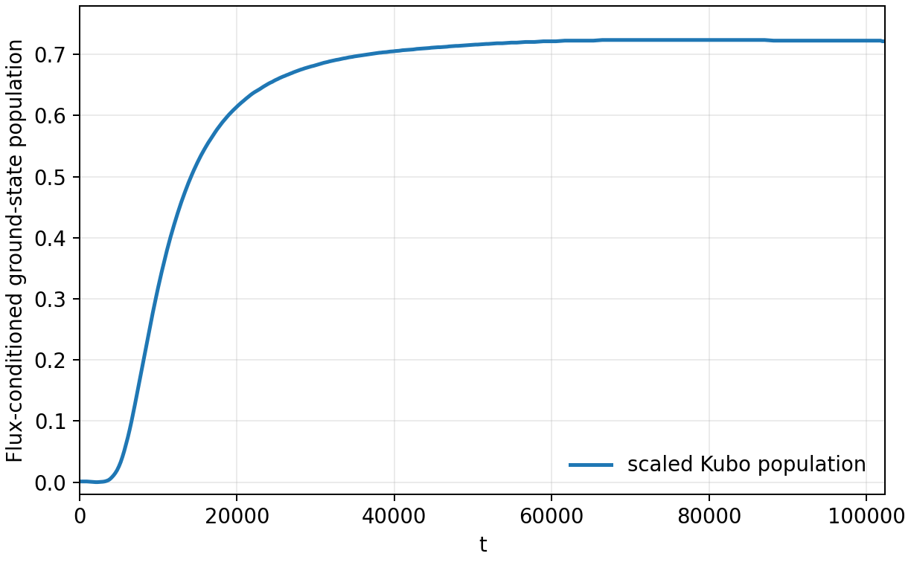
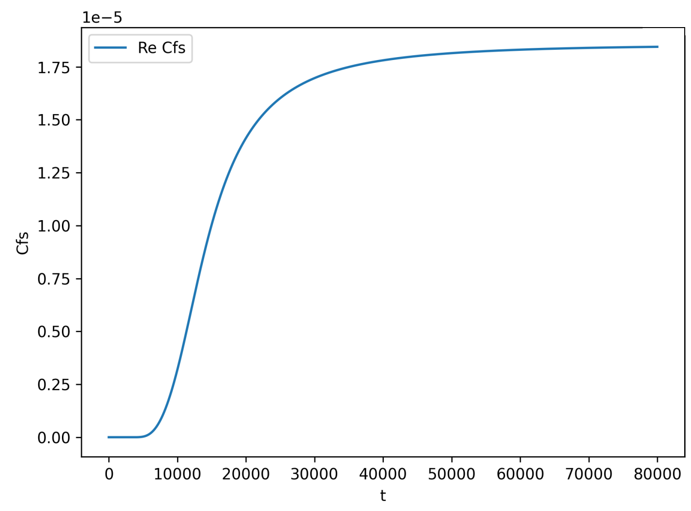

DVR Series - Part VII
Excited-Ground Kubo Population Correlation
The previous note built a rate-like flux-side correlation. This note adds electronic resolution: the initial operator is restricted to the excited adiabatic channel, while the later observation asks whether the system occupies the ground adiabatic channel. The result is a population-resolved Kubo benchmark for a two-state scattering model.
Why another Kubo observable?
A single trajectory population curve is not a thermal quantum benchmark. A Kubo-transformed correlation starts from the ensemble and then asks a real-time question. Here the question is: after an excited-channel incoming flux event, how much ground-channel population is seen at time \(t\)?
This calculation is direct once the DVR Hamiltonian is assembled. The saved times are evaluated by finite-dimensional matrix propagation, not by iterating an approximate time-step rule.
Product DVR Hamiltonian
The two-state DVR space is a product of a coordinate grid and a two-dimensional electronic space:
With state-major ordering, \(|x_1\rangle\otimes |1\rangle,\ldots,|x_N\rangle\otimes |1\rangle,|x_1\rangle\otimes |2\rangle,\ldots\), the Hamiltonian used in the source code has the block form
The numerical example uses the simple avoided crossing potential,
Local adiabatic projectors
At each grid point, diagonalize the local \(2\times2\) potential matrix,
The corresponding local electronic eigenvectors define the ground and excited projectors,
Embedding these local projectors back into the DVR grid gives
They satisfy \(P_g^2=P_g\), \(P_e^2=P_e\), and \(P_g+P_e=I\) up to numerical roundoff. This is why the implementation can construct \(P_e\) either explicitly or as \(I-P_g\).
Population Kubo Formula
Let \(h_1=\Theta(\hat x-s_1)\otimes I_{\mathrm{el}}\) be a side operator and
be the associated flux operator. The source note uses an excited-channel projected flux as the initial operator,
The two-sided projection around \(F_1\) matters because the flux is itself an operator with incoming and outgoing matrix elements. The later \(P_g\) is the population-like observation operator.
Read literally, this is not the ordinary \(x-x\) Kubo correlation from Part V and not a population curve for a single prepared wavepacket. It is a flux-conditioned population diagnostic: thermal weighting first, excited-channel incoming-flux selection second, and ground-channel population observation last.
Relation to \(pop(t)\)
The CSSH paper uses this object as the quantum benchmark for the time-dependent ground-state population after excited-state incoming flux. In the corresponding FSSH/CSSH ensemble, trajectories are initialized on the excited adiabatic state with kinetic energies sampled from the thermal flux distribution, and the classical analogue is
where \(\delta_{a_i(t),0}=1\) if trajectory \(i\) is on the ground adiabatic state at time \(t\), and 0 otherwise. Therefore the population-like observable is
with the same energy-zero and unit convention used in the source calculation. This scaled quantity is what should be compared with \(pop(t)\) from FSSH/CSSH trajectories. The unscaled Kubo trace has units and thermal prefactors; plotting it directly gives the correct correlation shape but not the numerical population range.
Spectral Kubo dressing
The imaginary-time integral is handled with the same energy-basis kernel used earlier in the series. If \(H|n\rangle=E_n|n\rangle\), define
The implementation first Kubo-dresses \(P_eF_1P_e\) with this kernel, then evaluates the real-time trace. This keeps the thermal part tied to the Hermitian physical Hamiltonian.
Absorber, Schur Propagation, and Integration
As in the flux-side note, a complex absorbing potential is used only for the real-time propagation:
The absorber prevents boundary reflections from returning to the physical region during long propagation. Since \(H_{\mathrm{abs}}\) is non-Hermitian, the code uses a complex Schur form \(H_{\mathrm{abs}}=ZTZ^\dagger\) and propagates with \(e^{-iTt}\). This avoids depending on unstable eigenvectors of a non-normal matrix.
In practice, the stable population curve is obtained from the time derivative of \(P_g(t)\). Define
The code evaluates the Kubo correlation between the dressed excited-channel flux and \(F_g(t)\), then integrates it in time. This is the population analogue of the flux-side construction: the derivative is local in the active transfer region, while the integrated and scaled curve gives the final probability plateau.
Numerical setup
The production run behind the figures uses \(m=2000\), \(T=300\) K, \(A=0.01\), \(B=1.6\), \(C=0.002\), \(D=1.0\), a displaced dividing surface with \(d=10\), and a dense sinc-DVR grid. In the convergence table below, \(N_p\) denotes the half-grid count in the source code, so the coordinate grid has \(2N_p\) points before the two electronic states are added.
Results


Convergence checks
The rate proxy \(k_{\mathrm{rate}}\) is stable near \(0.725\) across the useful grid and time settings:
total propagation time = 80000
Ntgrid k_rate
20 0.6949789
40 0.7232080
50 0.7252554
80 0.7229343
100 0.7272080
dx Np k_rate
0.02 1500 0.7250877
0.03 1000 0.7251283
0.05 600 0.7252554
0.06 500 0.7240988
0.10 300 0.7273803
cap_eta k_rate
0.01 0.7286199
0.03 0.7270159
0.05 0.7252554
0.07 0.7237397
0.09 0.7224113The \(dx=0.05\) result is already close to the denser-grid values. The CAP scan is more delicate: increasing \(\eta\) changes the plateau monotonically because the absorber is part of the finite computational box, not part of the physical Hamiltonian. A useful benchmark therefore needs both a moderate absorber and enough empty space that absorption does not contaminate the interaction region.
Code used in this note
The compact implementation below is a cleaned version of the corresponding flux-side Kubo working code. It keeps the full executable path from Hamiltonian construction to projector construction, Kubo dressing, Schur propagation, and plotting.
pg, pe = local_adiabatic_projectors(v11, v22, v12)
side = side_operator(x, flux_surface)
flux = flux_operator(hamiltonian, side)
excited_flux = pe @ flux @ pe
dressed_excited_flux = kubo_dress_operator(hamiltonian, excited_flux, beta)
c_pop = schur_correlation(hamiltonian_abs, dressed_excited_flux, pg, time)
ground_flux = flux_operator(hamiltonian, pg)
c_flux = schur_correlation(hamiltonian_abs, dressed_excited_flux, ground_flux, time)
c_integrated = cumulative_trapezoid(c_flux, time)
scaled_population = 2 * np.pi * beta * c_integrated.real # hbar = 1- dvr_excited_ground_kubo.py is the complete executable script for this note. The default settings are intentionally smaller than the production run so it can be used as a laptop-scale smoke test.
- dvr_kubo_minimal.py contains the shared DVR, side, flux, and Kubo routines used earlier in the series.
- source/flux-side-kubo/utils/quantum.py preserves the flux-side quantum utility routines from the original working folder.
- population-kubo-scaled-pop.csv stores the scaled population curve used in the updated result figure.
References and Acknowledgement
- Zeng, Li, and Fang, J. Chem. Phys. 163, 224126 (2025).
I thank Jia-Xi Zeng of Fudan University for helpful code support.